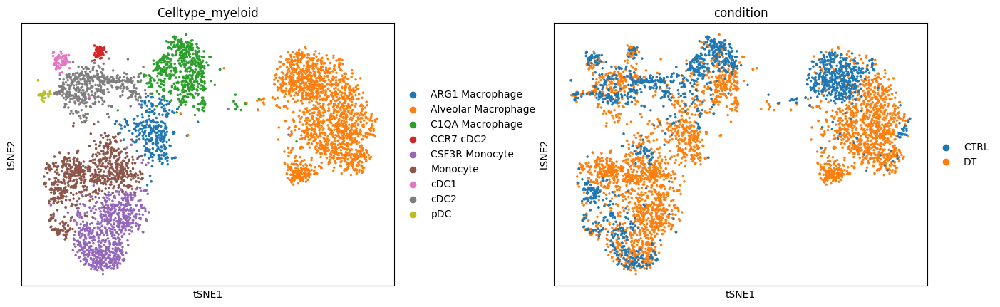
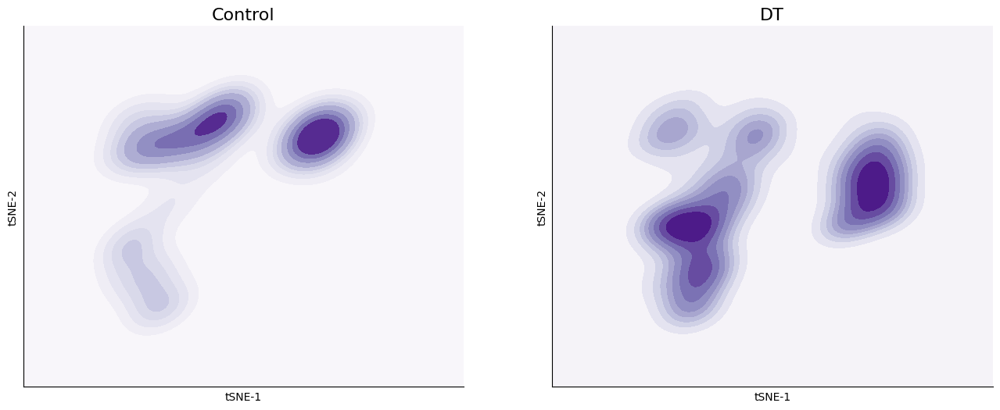
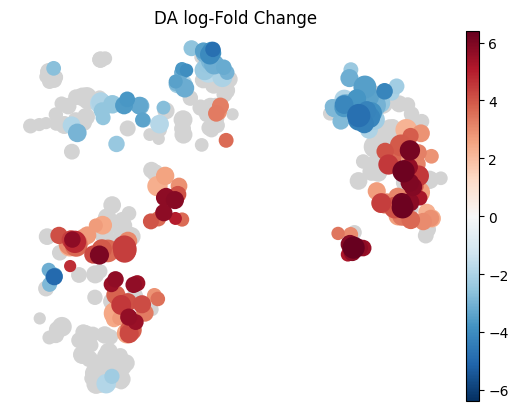
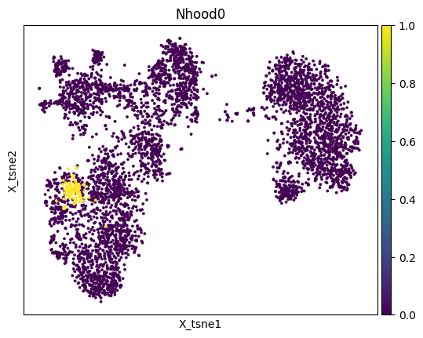
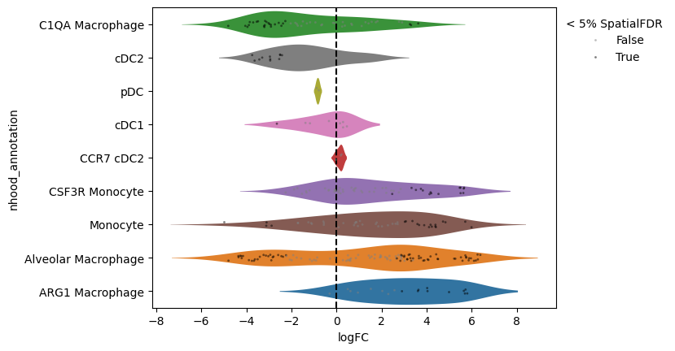
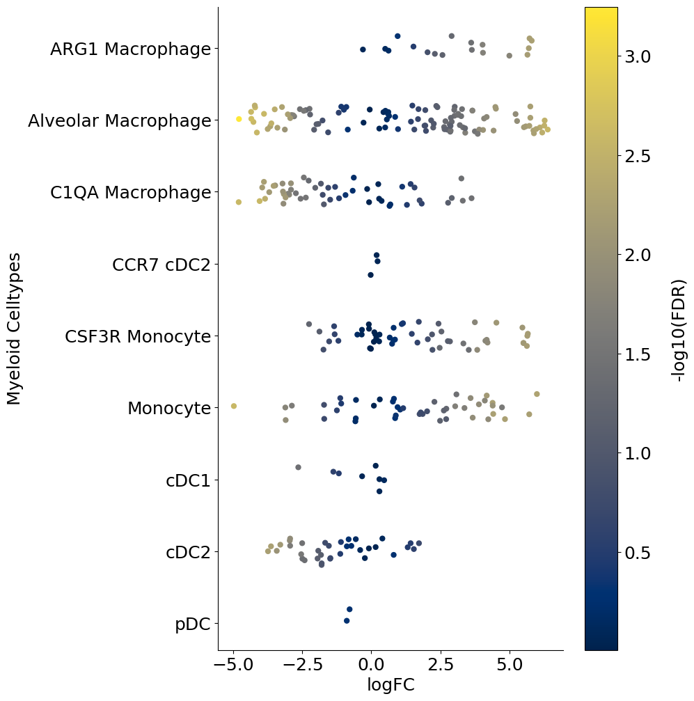
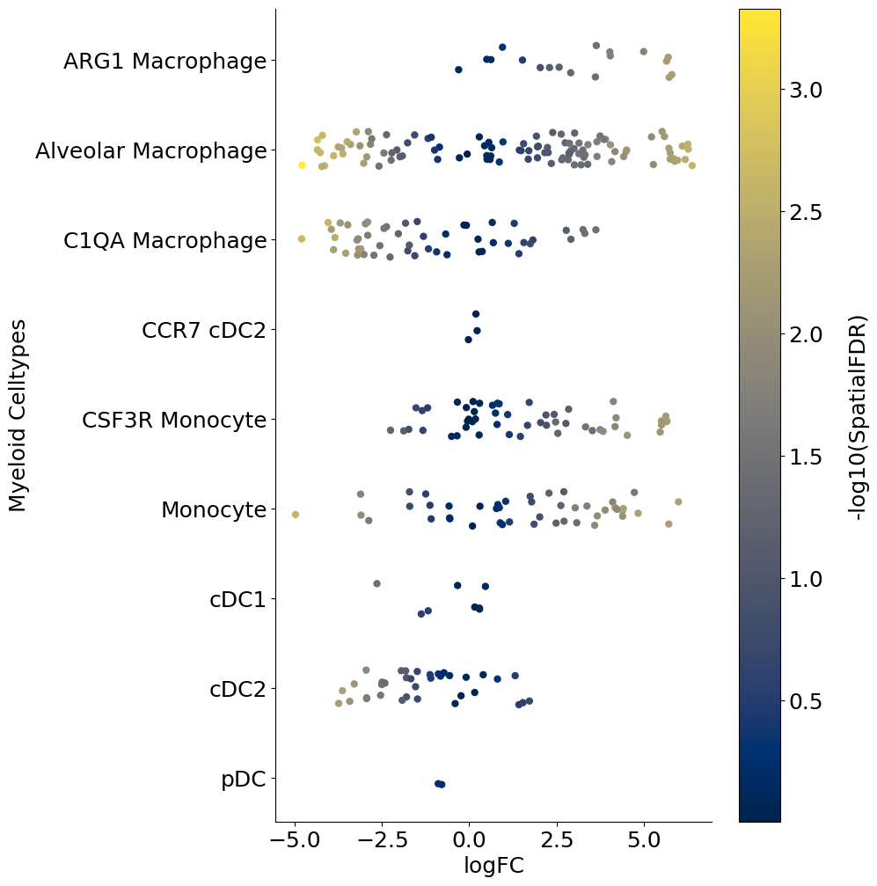
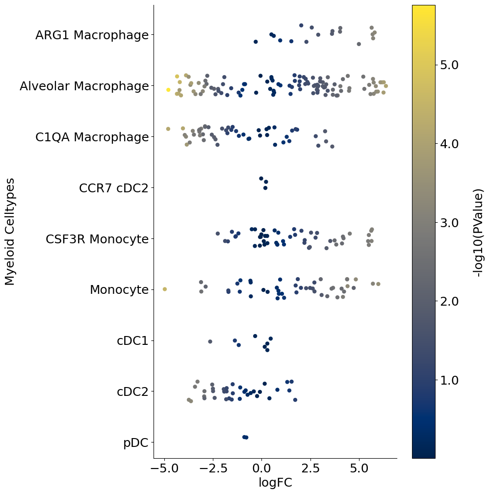

Introduction#
In this notebook we will look at some techniques for differential cell abundance analysis when you have multiple samples.
Load packages#
import pandas as pd
import numpy as np
import scanpy as sc
import matplotlib.pyplot as plt
Load example data#
input_path = "/Users/francesca.drummer/Documents/1_Projects/GSCN workshop/data/"
adata = sc.read_h5ad(input_path + "clean_myeloid.h5ad")
adata
AnnData object with n_obs × n_vars = 4718 × 12786
obs: 'Clusters', 'Celltype', 'SampleID', 'name', 'background', 'condition', 'replicate', 'experiment', 'ncells', 'libsize', 'mito_fraction', 'ribo_fraction', 'mhc_fraction', 'actin_fraction', 'cytoskeleton_fraction', 'malat1_fraction', 'scrublet_predict', 'scrublet_score', 'lowlibsize', 'Clusters_myeloid', 'Celltype_myeloid'
obsm: 'X_pca', 'X_tsne', 'imputed_data'
layers: 'norm_count', 'norm_log'
sc.pl.tsne(adata, color=["Celltype_myeloid", "condition"], wspace=0.3)

Alternate visual#
Let’s visualize density differences based on distribution of cells on the tSNE space. This gives was a visual perspective of what the density differences look like:
df_temp = pd.DataFrame(
{
"tsne_x": adata.obsm["X_tsne"][:, 0],
"tsne_y": adata.obsm["X_tsne"][:, 1],
"condition": adata.obs["condition"],
},
index=adata.obs.index,
)
import seaborn as sns
fig = plt.figure(figsize=(8 * 2, 6))
ax = fig.add_subplot(1, 2, 1)
sns.scatterplot(data=df_temp, x="tsne_x", y="tsne_y", s=1, ax=ax)
sns.kdeplot(
data=df_temp[df_temp["condition"] == "CTRL"],
x="tsne_x",
y="tsne_y",
fill=True,
thresh=0,
levels=10,
cmap="Purples",
ax=ax,
cut=4,
)
ax.set_xticks([])
ax.set_yticks([])
ax.set_title("Control", fontsize=16)
ax.set_xlabel("tSNE-1")
ax.set_ylabel("tSNE-2")
ax.spines["right"].set_visible(False)
ax.spines["top"].set_visible(False)
ax = fig.add_subplot(1, 2, 2)
sns.scatterplot(data=df_temp, x="tsne_x", y="tsne_y", s=0, ax=ax)
sns.kdeplot(
data=df_temp[df_temp["condition"] == "DT"],
x="tsne_x",
y="tsne_y",
fill=True,
thresh=0,
levels=10,
cmap="Purples",
ax=ax,
cut=4,
)
ax.set_xticks([])
ax.set_yticks([])
ax.set_title("DT", fontsize=16)
ax.set_xlabel("tSNE-1")
ax.set_ylabel("tSNE-2")
ax.spines["right"].set_visible(False)
ax.spines["top"].set_visible(False)
# fig.savefig(outbase + 'Ctrl_DT_kdeplot_endo.png', dpi = 150, bbox_inches = 'tight')

MiloR#
Milo is a statistical method to quantify changes in cellular abundancies in neighborhoods of cells in high-dimensional space. Given a data with cells from two conditions, Milo partitions the cell phenotype space in a set of (possibly overlapping) neighborhoods and allows quantification of differential abundances of cells from one condition compared to another in each neighborhood. It outputs associated logfoldchange between the two conditions, p-values and multiple comparisons adjusted p-values for each neighborhood. Furthermore, Milo allows one to annotate each neighborhood as a distinct celltype based on the proportion of cells from each celltype in the neighborhood. All of this is discussed in the code below.
Milo’s strength lies in detecting subtle local changes in cellular abundances. This is possible by the use of graphs and looking for changes in occupancy locally along the graph.
For more details, please see the original publication: https://www.nature.com/articles/s41587-021-01033-z.
We will use the pertpy implementation of miloR from Python.
MiloR has been included in the more general perturbation analysis package called Pertpy: scverse/pertpy
Import and setup pertpy#
! pip install pertpy
Collecting pertpy
Downloading pertpy-1.0.3-py3-none-any.whl.metadata (9.4 kB)
Requirement already satisfied: adjusttext in /Users/francesca.drummer/miniconda3/envs/workshop_2025/lib/python3.12/site-packages (from pertpy) (1.3.0)
Collecting arviz (from pertpy)
Downloading arviz-0.22.0-py3-none-any.whl.metadata (8.9 kB)
Collecting blitzgsea (from pertpy)
Downloading blitzgsea-1.3.54.tar.gz (626 kB)
━━━━━━━━━━━━━━━━━━━━━━━━━━━━━━━━━━━━━━━━ 627.0/627.0 kB 16.2 MB/s 0:00:00
?25h Preparing metadata (setup.py) ... ?25ldone
?25hCollecting fast-array-utils[accel,sparse] (from pertpy)
Downloading fast_array_utils-1.2.3-py3-none-any.whl.metadata (3.7 kB)
Collecting flax (from pertpy)
Downloading flax-0.12.0-py3-none-any.whl.metadata (11 kB)
Collecting funsor (from pertpy)
Downloading funsor-0.4.5-py3-none-any.whl.metadata (7.8 kB)
Collecting lamin-utils (from pertpy)
Downloading lamin_utils-0.15.0-py2.py3-none-any.whl.metadata (961 bytes)
Requirement already satisfied: mudata in /Users/francesca.drummer/miniconda3/envs/workshop_2025/lib/python3.12/site-packages (from pertpy) (0.3.2)
Collecting numpyro (from pertpy)
Using cached numpyro-0.19.0-py3-none-any.whl.metadata (37 kB)
Requirement already satisfied: openpyxl in /Users/francesca.drummer/miniconda3/envs/workshop_2025/lib/python3.12/site-packages (from pertpy) (3.1.5)
Collecting ott-jax (from pertpy)
Downloading ott_jax-0.5.2-py3-none-any.whl.metadata (20 kB)
Collecting pubchempy (from pertpy)
Downloading pubchempy-1.0.5-py3-none-any.whl.metadata (4.3 kB)
Requirement already satisfied: pyarrow in /Users/francesca.drummer/miniconda3/envs/workshop_2025/lib/python3.12/site-packages (from pertpy) (21.0.0)
Requirement already satisfied: requests in /Users/francesca.drummer/miniconda3/envs/workshop_2025/lib/python3.12/site-packages (from pertpy) (2.32.5)
Requirement already satisfied: rich in /Users/francesca.drummer/miniconda3/envs/workshop_2025/lib/python3.12/site-packages (from pertpy) (14.1.0)
Requirement already satisfied: scanpy in /Users/francesca.drummer/miniconda3/envs/workshop_2025/lib/python3.12/site-packages (from pertpy) (1.11.4)
Requirement already satisfied: scikit-learn>=1.4 in /Users/francesca.drummer/miniconda3/envs/workshop_2025/lib/python3.12/site-packages (from pertpy) (1.7.2)
Requirement already satisfied: scikit-misc in /Users/francesca.drummer/miniconda3/envs/workshop_2025/lib/python3.12/site-packages (from pertpy) (0.5.1)
Collecting sparsecca (from pertpy)
Downloading sparsecca-0.3.1-py3-none-any.whl.metadata (1.9 kB)
Requirement already satisfied: numpy>=1.22.0 in /Users/francesca.drummer/miniconda3/envs/workshop_2025/lib/python3.12/site-packages (from scikit-learn>=1.4->pertpy) (2.3.3)
Requirement already satisfied: scipy>=1.8.0 in /Users/francesca.drummer/miniconda3/envs/workshop_2025/lib/python3.12/site-packages (from scikit-learn>=1.4->pertpy) (1.15.3)
Requirement already satisfied: joblib>=1.2.0 in /Users/francesca.drummer/miniconda3/envs/workshop_2025/lib/python3.12/site-packages (from scikit-learn>=1.4->pertpy) (1.5.2)
Requirement already satisfied: threadpoolctl>=3.1.0 in /Users/francesca.drummer/miniconda3/envs/workshop_2025/lib/python3.12/site-packages (from scikit-learn>=1.4->pertpy) (3.6.0)
Requirement already satisfied: matplotlib in /Users/francesca.drummer/miniconda3/envs/workshop_2025/lib/python3.12/site-packages (from adjusttext->pertpy) (3.10.6)
Requirement already satisfied: setuptools>=60.0.0 in /Users/francesca.drummer/miniconda3/envs/workshop_2025/lib/python3.12/site-packages (from arviz->pertpy) (78.1.1)
Requirement already satisfied: packaging in /Users/francesca.drummer/miniconda3/envs/workshop_2025/lib/python3.12/site-packages (from arviz->pertpy) (25.0)
Requirement already satisfied: pandas>=2.1.0 in /Users/francesca.drummer/miniconda3/envs/workshop_2025/lib/python3.12/site-packages (from arviz->pertpy) (2.3.3)
Requirement already satisfied: xarray>=2023.7.0 in /Users/francesca.drummer/miniconda3/envs/workshop_2025/lib/python3.12/site-packages (from arviz->pertpy) (2025.10.1)
Collecting h5netcdf>=1.0.2 (from arviz->pertpy)
Downloading h5netcdf-1.6.4-py3-none-any.whl.metadata (13 kB)
Requirement already satisfied: typing-extensions>=4.1.0 in /Users/francesca.drummer/miniconda3/envs/workshop_2025/lib/python3.12/site-packages (from arviz->pertpy) (4.15.0)
Collecting xarray-einstats>=0.3 (from arviz->pertpy)
Downloading xarray_einstats-0.9.1-py3-none-any.whl.metadata (5.9 kB)
Requirement already satisfied: h5py in /Users/francesca.drummer/miniconda3/envs/workshop_2025/lib/python3.12/site-packages (from h5netcdf>=1.0.2->arviz->pertpy) (3.14.0)
Requirement already satisfied: contourpy>=1.0.1 in /Users/francesca.drummer/miniconda3/envs/workshop_2025/lib/python3.12/site-packages (from matplotlib->adjusttext->pertpy) (1.3.3)
Requirement already satisfied: cycler>=0.10 in /Users/francesca.drummer/miniconda3/envs/workshop_2025/lib/python3.12/site-packages (from matplotlib->adjusttext->pertpy) (0.12.1)
Requirement already satisfied: fonttools>=4.22.0 in /Users/francesca.drummer/miniconda3/envs/workshop_2025/lib/python3.12/site-packages (from matplotlib->adjusttext->pertpy) (4.60.1)
Requirement already satisfied: kiwisolver>=1.3.1 in /Users/francesca.drummer/miniconda3/envs/workshop_2025/lib/python3.12/site-packages (from matplotlib->adjusttext->pertpy) (1.4.9)
Requirement already satisfied: pillow>=8 in /Users/francesca.drummer/miniconda3/envs/workshop_2025/lib/python3.12/site-packages (from matplotlib->adjusttext->pertpy) (11.3.0)
Requirement already satisfied: pyparsing>=2.3.1 in /Users/francesca.drummer/miniconda3/envs/workshop_2025/lib/python3.12/site-packages (from matplotlib->adjusttext->pertpy) (3.2.5)
Requirement already satisfied: python-dateutil>=2.7 in /Users/francesca.drummer/miniconda3/envs/workshop_2025/lib/python3.12/site-packages (from matplotlib->adjusttext->pertpy) (2.9.0.post0)
Requirement already satisfied: pytz>=2020.1 in /Users/francesca.drummer/miniconda3/envs/workshop_2025/lib/python3.12/site-packages (from pandas>=2.1.0->arviz->pertpy) (2025.2)
Requirement already satisfied: tzdata>=2022.7 in /Users/francesca.drummer/miniconda3/envs/workshop_2025/lib/python3.12/site-packages (from pandas>=2.1.0->arviz->pertpy) (2025.2)
Requirement already satisfied: six>=1.5 in /Users/francesca.drummer/miniconda3/envs/workshop_2025/lib/python3.12/site-packages (from python-dateutil>=2.7->matplotlib->adjusttext->pertpy) (1.17.0)
Requirement already satisfied: tqdm in /Users/francesca.drummer/miniconda3/envs/workshop_2025/lib/python3.12/site-packages (from blitzgsea->pertpy) (4.67.1)
Requirement already satisfied: statsmodels in /Users/francesca.drummer/miniconda3/envs/workshop_2025/lib/python3.12/site-packages (from blitzgsea->pertpy) (0.14.5)
Requirement already satisfied: mpmath in /Users/francesca.drummer/miniconda3/envs/workshop_2025/lib/python3.12/site-packages (from blitzgsea->pertpy) (1.3.0)
Requirement already satisfied: numba>=0.57 in /Users/francesca.drummer/miniconda3/envs/workshop_2025/lib/python3.12/site-packages (from fast-array-utils[accel,sparse]->pertpy) (0.62.1)
Requirement already satisfied: llvmlite<0.46,>=0.45.0dev0 in /Users/francesca.drummer/miniconda3/envs/workshop_2025/lib/python3.12/site-packages (from numba>=0.57->fast-array-utils[accel,sparse]->pertpy) (0.45.1)
Requirement already satisfied: jax>=0.7.1 in /Users/francesca.drummer/miniconda3/envs/workshop_2025/lib/python3.12/site-packages (from flax->pertpy) (0.7.2)
Collecting msgpack (from flax->pertpy)
Downloading msgpack-1.1.2-cp312-cp312-macosx_11_0_arm64.whl.metadata (8.1 kB)
Collecting optax (from flax->pertpy)
Downloading optax-0.2.6-py3-none-any.whl.metadata (7.6 kB)
Collecting orbax-checkpoint (from flax->pertpy)
Downloading orbax_checkpoint-0.11.25-py3-none-any.whl.metadata (2.3 kB)
Collecting tensorstore (from flax->pertpy)
Downloading tensorstore-0.1.78-cp312-cp312-macosx_11_0_arm64.whl.metadata (21 kB)
Requirement already satisfied: PyYAML>=5.4.1 in /Users/francesca.drummer/miniconda3/envs/workshop_2025/lib/python3.12/site-packages (from flax->pertpy) (6.0.3)
Collecting treescope>=0.1.7 (from flax->pertpy)
Using cached treescope-0.1.10-py3-none-any.whl.metadata (6.6 kB)
Requirement already satisfied: jaxlib<=0.7.2,>=0.7.2 in /Users/francesca.drummer/miniconda3/envs/workshop_2025/lib/python3.12/site-packages (from jax>=0.7.1->flax->pertpy) (0.7.2)
Requirement already satisfied: ml_dtypes>=0.5.0 in /Users/francesca.drummer/miniconda3/envs/workshop_2025/lib/python3.12/site-packages (from jax>=0.7.1->flax->pertpy) (0.5.3)
Requirement already satisfied: opt_einsum in /Users/francesca.drummer/miniconda3/envs/workshop_2025/lib/python3.12/site-packages (from jax>=0.7.1->flax->pertpy) (3.4.0)
Requirement already satisfied: markdown-it-py>=2.2.0 in /Users/francesca.drummer/miniconda3/envs/workshop_2025/lib/python3.12/site-packages (from rich->pertpy) (4.0.0)
Requirement already satisfied: pygments<3.0.0,>=2.13.0 in /Users/francesca.drummer/miniconda3/envs/workshop_2025/lib/python3.12/site-packages (from rich->pertpy) (2.19.1)
Requirement already satisfied: mdurl~=0.1 in /Users/francesca.drummer/miniconda3/envs/workshop_2025/lib/python3.12/site-packages (from markdown-it-py>=2.2.0->rich->pertpy) (0.1.2)
Collecting makefun (from funsor->pertpy)
Downloading makefun-1.16.0-py2.py3-none-any.whl.metadata (2.9 kB)
Requirement already satisfied: multipledispatch in /Users/francesca.drummer/miniconda3/envs/workshop_2025/lib/python3.12/site-packages (from funsor->pertpy) (1.0.0)
Requirement already satisfied: anndata>=0.10.8 in /Users/francesca.drummer/miniconda3/envs/workshop_2025/lib/python3.12/site-packages (from mudata->pertpy) (0.12.2)
Requirement already satisfied: array-api-compat>=1.7.1 in /Users/francesca.drummer/miniconda3/envs/workshop_2025/lib/python3.12/site-packages (from anndata>=0.10.8->mudata->pertpy) (1.12.0)
Requirement already satisfied: legacy-api-wrap in /Users/francesca.drummer/miniconda3/envs/workshop_2025/lib/python3.12/site-packages (from anndata>=0.10.8->mudata->pertpy) (1.4.1)
Requirement already satisfied: natsort in /Users/francesca.drummer/miniconda3/envs/workshop_2025/lib/python3.12/site-packages (from anndata>=0.10.8->mudata->pertpy) (8.4.0)
Requirement already satisfied: zarr!=3.0.*,>=2.18.7 in /Users/francesca.drummer/miniconda3/envs/workshop_2025/lib/python3.12/site-packages (from anndata>=0.10.8->mudata->pertpy) (2.18.7)
Requirement already satisfied: asciitree in /Users/francesca.drummer/miniconda3/envs/workshop_2025/lib/python3.12/site-packages (from zarr!=3.0.*,>=2.18.7->anndata>=0.10.8->mudata->pertpy) (0.3.3)
Requirement already satisfied: fasteners in /Users/francesca.drummer/miniconda3/envs/workshop_2025/lib/python3.12/site-packages (from zarr!=3.0.*,>=2.18.7->anndata>=0.10.8->mudata->pertpy) (0.20)
Requirement already satisfied: numcodecs!=0.14.0,!=0.14.1,<0.16,>=0.10.0 in /Users/francesca.drummer/miniconda3/envs/workshop_2025/lib/python3.12/site-packages (from zarr!=3.0.*,>=2.18.7->anndata>=0.10.8->mudata->pertpy) (0.15.1)
Requirement already satisfied: deprecated in /Users/francesca.drummer/miniconda3/envs/workshop_2025/lib/python3.12/site-packages (from numcodecs!=0.14.0,!=0.14.1,<0.16,>=0.10.0->zarr!=3.0.*,>=2.18.7->anndata>=0.10.8->mudata->pertpy) (1.2.18)
Requirement already satisfied: wrapt<2,>=1.10 in /Users/francesca.drummer/miniconda3/envs/workshop_2025/lib/python3.12/site-packages (from deprecated->numcodecs!=0.14.0,!=0.14.1,<0.16,>=0.10.0->zarr!=3.0.*,>=2.18.7->anndata>=0.10.8->mudata->pertpy) (1.17.3)
Requirement already satisfied: et-xmlfile in /Users/francesca.drummer/miniconda3/envs/workshop_2025/lib/python3.12/site-packages (from openpyxl->pertpy) (2.0.0)
Requirement already satisfied: absl-py>=0.7.1 in /Users/francesca.drummer/miniconda3/envs/workshop_2025/lib/python3.12/site-packages (from optax->flax->pertpy) (2.3.1)
Collecting chex>=0.1.87 (from optax->flax->pertpy)
Downloading chex-0.1.91-py3-none-any.whl.metadata (18 kB)
Requirement already satisfied: toolz>=1.0.0 in /Users/francesca.drummer/miniconda3/envs/workshop_2025/lib/python3.12/site-packages (from chex>=0.1.87->optax->flax->pertpy) (1.0.0)
Collecting etils[epath,epy] (from orbax-checkpoint->flax->pertpy)
Using cached etils-1.13.0-py3-none-any.whl.metadata (6.5 kB)
Requirement already satisfied: nest_asyncio in /Users/francesca.drummer/miniconda3/envs/workshop_2025/lib/python3.12/site-packages (from orbax-checkpoint->flax->pertpy) (1.6.0)
Collecting aiofiles (from orbax-checkpoint->flax->pertpy)
Downloading aiofiles-25.1.0-py3-none-any.whl.metadata (6.3 kB)
Requirement already satisfied: protobuf in /Users/francesca.drummer/miniconda3/envs/workshop_2025/lib/python3.12/site-packages (from orbax-checkpoint->flax->pertpy) (6.32.1)
Collecting humanize (from orbax-checkpoint->flax->pertpy)
Using cached humanize-4.13.0-py3-none-any.whl.metadata (7.8 kB)
Collecting simplejson>=3.16.0 (from orbax-checkpoint->flax->pertpy)
Downloading simplejson-3.20.2-cp312-cp312-macosx_11_0_arm64.whl.metadata (3.4 kB)
Requirement already satisfied: fsspec in /Users/francesca.drummer/miniconda3/envs/workshop_2025/lib/python3.12/site-packages (from etils[epath,epy]->orbax-checkpoint->flax->pertpy) (2025.9.0)
Collecting importlib_resources (from etils[epath,epy]->orbax-checkpoint->flax->pertpy)
Using cached importlib_resources-6.5.2-py3-none-any.whl.metadata (3.9 kB)
Collecting zipp (from etils[epath,epy]->orbax-checkpoint->flax->pertpy)
Using cached zipp-3.23.0-py3-none-any.whl.metadata (3.6 kB)
Requirement already satisfied: jaxopt>=0.8 in /Users/francesca.drummer/miniconda3/envs/workshop_2025/lib/python3.12/site-packages (from ott-jax->pertpy) (0.8.5)
Collecting lineax>=0.0.7 (from ott-jax->pertpy)
Downloading lineax-0.0.8-py3-none-any.whl.metadata (18 kB)
Collecting equinox>=0.11.10 (from lineax>=0.0.7->ott-jax->pertpy)
Downloading equinox-0.13.2-py3-none-any.whl.metadata (19 kB)
Collecting jaxtyping>=0.2.24 (from lineax>=0.0.7->ott-jax->pertpy)
Downloading jaxtyping-0.3.3-py3-none-any.whl.metadata (7.8 kB)
Collecting wadler-lindig>=0.1.0 (from equinox>=0.11.10->lineax>=0.0.7->ott-jax->pertpy)
Downloading wadler_lindig-0.1.7-py3-none-any.whl.metadata (17 kB)
Requirement already satisfied: charset_normalizer<4,>=2 in /Users/francesca.drummer/miniconda3/envs/workshop_2025/lib/python3.12/site-packages (from requests->pertpy) (3.4.3)
Requirement already satisfied: idna<4,>=2.5 in /Users/francesca.drummer/miniconda3/envs/workshop_2025/lib/python3.12/site-packages (from requests->pertpy) (3.10)
Requirement already satisfied: urllib3<3,>=1.21.1 in /Users/francesca.drummer/miniconda3/envs/workshop_2025/lib/python3.12/site-packages (from requests->pertpy) (2.5.0)
Requirement already satisfied: certifi>=2017.4.17 in /Users/francesca.drummer/miniconda3/envs/workshop_2025/lib/python3.12/site-packages (from requests->pertpy) (2025.10.5)
Requirement already satisfied: networkx>=2.7.1 in /Users/francesca.drummer/miniconda3/envs/workshop_2025/lib/python3.12/site-packages (from scanpy->pertpy) (3.5)
Requirement already satisfied: patsy!=1.0.0 in /Users/francesca.drummer/miniconda3/envs/workshop_2025/lib/python3.12/site-packages (from scanpy->pertpy) (1.0.1)
Requirement already satisfied: pynndescent>=0.5.13 in /Users/francesca.drummer/miniconda3/envs/workshop_2025/lib/python3.12/site-packages (from scanpy->pertpy) (0.5.13)
Requirement already satisfied: seaborn>=0.13.2 in /Users/francesca.drummer/miniconda3/envs/workshop_2025/lib/python3.12/site-packages (from scanpy->pertpy) (0.13.2)
Requirement already satisfied: session-info2 in /Users/francesca.drummer/miniconda3/envs/workshop_2025/lib/python3.12/site-packages (from scanpy->pertpy) (0.2.2)
Requirement already satisfied: umap-learn>=0.5.6 in /Users/francesca.drummer/miniconda3/envs/workshop_2025/lib/python3.12/site-packages (from scanpy->pertpy) (0.5.9.post2)
Collecting pyomo (from sparsecca->pertpy)
Downloading pyomo-6.9.4-cp312-cp312-macosx_11_0_arm64.whl.metadata (11 kB)
Collecting ply (from pyomo->sparsecca->pertpy)
Downloading ply-3.11-py2.py3-none-any.whl.metadata (844 bytes)
Downloading pertpy-1.0.3-py3-none-any.whl (216 kB)
Downloading arviz-0.22.0-py3-none-any.whl (1.7 MB)
━━━━━━━━━━━━━━━━━━━━━━━━━━━━━━━━━━━━━━━━ 1.7/1.7 MB 25.7 MB/s 0:00:00
?25hDownloading h5netcdf-1.6.4-py3-none-any.whl (50 kB)
Downloading xarray_einstats-0.9.1-py3-none-any.whl (39 kB)
Downloading fast_array_utils-1.2.3-py3-none-any.whl (34 kB)
Downloading flax-0.12.0-py3-none-any.whl (466 kB)
Using cached treescope-0.1.10-py3-none-any.whl (182 kB)
Downloading funsor-0.4.5-py3-none-any.whl (174 kB)
Downloading lamin_utils-0.15.0-py2.py3-none-any.whl (25 kB)
Downloading makefun-1.16.0-py2.py3-none-any.whl (22 kB)
Downloading msgpack-1.1.2-cp312-cp312-macosx_11_0_arm64.whl (85 kB)
Using cached numpyro-0.19.0-py3-none-any.whl (370 kB)
Downloading optax-0.2.6-py3-none-any.whl (367 kB)
Downloading chex-0.1.91-py3-none-any.whl (100 kB)
Downloading orbax_checkpoint-0.11.25-py3-none-any.whl (563 kB)
━━━━━━━━━━━━━━━━━━━━━━━━━━━━━━━━━━━━━━━━ 563.1/563.1 kB 14.8 MB/s 0:00:00
?25hDownloading simplejson-3.20.2-cp312-cp312-macosx_11_0_arm64.whl (75 kB)
Downloading tensorstore-0.1.78-cp312-cp312-macosx_11_0_arm64.whl (13.8 MB)
━━━━━━━━━━━━━━━━━━━━━━━━━━━━━━━━━━━━━━━━ 13.8/13.8 MB 20.9 MB/s 0:00:00 eta 0:00:01
?25hDownloading aiofiles-25.1.0-py3-none-any.whl (14 kB)
Using cached etils-1.13.0-py3-none-any.whl (170 kB)
Using cached humanize-4.13.0-py3-none-any.whl (128 kB)
Using cached importlib_resources-6.5.2-py3-none-any.whl (37 kB)
Downloading ott_jax-0.5.2-py3-none-any.whl (298 kB)
Downloading lineax-0.0.8-py3-none-any.whl (68 kB)
Downloading equinox-0.13.2-py3-none-any.whl (179 kB)
Downloading jaxtyping-0.3.3-py3-none-any.whl (55 kB)
Downloading wadler_lindig-0.1.7-py3-none-any.whl (20 kB)
Downloading pubchempy-1.0.5-py3-none-any.whl (21 kB)
Downloading sparsecca-0.3.1-py3-none-any.whl (12 kB)
Downloading pyomo-6.9.4-cp312-cp312-macosx_11_0_arm64.whl (4.3 MB)
━━━━━━━━━━━━━━━━━━━━━━━━━━━━━━━━━━━━━━━━ 4.3/4.3 MB 26.2 MB/s 0:00:00
?25hDownloading ply-3.11-py2.py3-none-any.whl (49 kB)
Using cached zipp-3.23.0-py3-none-any.whl (10 kB)
Building wheels for collected packages: blitzgsea
DEPRECATION: Building 'blitzgsea' using the legacy setup.py bdist_wheel mechanism, which will be removed in a future version. pip 25.3 will enforce this behaviour change. A possible replacement is to use the standardized build interface by setting the `--use-pep517` option, (possibly combined with `--no-build-isolation`), or adding a `pyproject.toml` file to the source tree of 'blitzgsea'. Discussion can be found at https://github.com/pypa/pip/issues/6334
Building wheel for blitzgsea (setup.py) ... ?25ldone
?25h Created wheel for blitzgsea: filename=blitzgsea-1.3.54-py3-none-any.whl size=625754 sha256=6001b76a0baab12482167edbc672c9f9447555108fc66e984db0cd9721a3dffb
Stored in directory: /Users/francesca.drummer/Library/Caches/pip/wheels/e3/00/84/15131449d6f397371baa95614491906dbd4ca2a932194b9494
Successfully built blitzgsea
Installing collected packages: ply, makefun, lamin-utils, zipp, wadler-lindig, treescope, simplejson, pyomo, pubchempy, msgpack, importlib_resources, humanize, funsor, fast-array-utils, etils, aiofiles, tensorstore, jaxtyping, h5netcdf, xarray-einstats, sparsecca, orbax-checkpoint, numpyro, equinox, chex, blitzgsea, optax, lineax, arviz, ott-jax, flax, pertpy
━━━━━━━━━━━━━━━━━━━━━━━━━━━━━━━━━━━━━━━━ 32/32 [pertpy]30/32 [flax]ax]eckpoint]
Successfully installed aiofiles-25.1.0 arviz-0.22.0 blitzgsea-1.3.54 chex-0.1.91 equinox-0.13.2 etils-1.13.0 fast-array-utils-1.2.3 flax-0.12.0 funsor-0.4.5 h5netcdf-1.6.4 humanize-4.13.0 importlib_resources-6.5.2 jaxtyping-0.3.3 lamin-utils-0.15.0 lineax-0.0.8 makefun-1.16.0 msgpack-1.1.2 numpyro-0.19.0 optax-0.2.6 orbax-checkpoint-0.11.25 ott-jax-0.5.2 pertpy-1.0.3 ply-3.11 pubchempy-1.0.5 pyomo-6.9.4 simplejson-3.20.2 sparsecca-0.3.1 tensorstore-0.1.78 treescope-0.1.10 wadler-lindig-0.1.7 xarray-einstats-0.9.1 zipp-3.23.0
import pertpy as pt
milo = pt.tl.Milo()
# Create a milo object - note: milor requires mudata as input
mdata = milo.load(adata)
# compute neighbor graph
sc.pp.neighbors(mdata["rna"], n_neighbors=30, use_rep="X_pca")
# Make overlapping neighborhoods
milo.make_nhoods(
mdata["rna"], neighbors_key=None, feature_key="rna", prop=0.1, seed=0, copy=False
)
# count cells in each neighborhood
mdata = milo.count_nhoods(mdata, sample_col="SampleID")
# Do differential abundance analysis using milo
milo.da_nhoods(mdata, design="~condition")
mdata["rna"]
AnnData object with n_obs × n_vars = 4718 × 12786
obs: 'Clusters', 'Celltype', 'SampleID', 'name', 'background', 'condition', 'replicate', 'experiment', 'ncells', 'libsize', 'mito_fraction', 'ribo_fraction', 'mhc_fraction', 'actin_fraction', 'cytoskeleton_fraction', 'malat1_fraction', 'scrublet_predict', 'scrublet_score', 'lowlibsize', 'Clusters_myeloid', 'Celltype_myeloid', 'nhood_ixs_random', 'nhood_ixs_refined', 'nhood_kth_distance'
uns: 'Celltype_myeloid_colors', 'condition_colors', 'neighbors', 'nhood_neighbors_key'
obsm: 'X_pca', 'X_tsne', 'imputed_data', 'nhoods'
layers: 'norm_count', 'norm_log'
obsp: 'distances', 'connectivities'
Visualize fold change on UMAP/tSNE#
# Build graph and visualize it
milo.build_nhood_graph(mdata, basis="X_tsne")
milo.plot_nhood_graph(mdata)
/Users/francesca.drummer/miniconda3/envs/workshop_2025/lib/python3.12/site-packages/anndata/_core/anndata.py:1175: ImplicitModificationWarning: Trying to modify attribute `.obs` of view, initializing view as actual.
df[key] = c
/Users/francesca.drummer/miniconda3/envs/workshop_2025/lib/python3.12/site-packages/anndata/_core/anndata.py:1175: ImplicitModificationWarning: Trying to modify attribute `.obs` of view, initializing view as actual.
df[key] = c
/Users/francesca.drummer/miniconda3/envs/workshop_2025/lib/python3.12/site-packages/anndata/_core/anndata.py:1175: ImplicitModificationWarning: Trying to modify attribute `.obs` of view, initializing view as actual.
df[key] = c

mdata["rna"]
AnnData object with n_obs × n_vars = 4718 × 12786
obs: 'Clusters', 'Celltype', 'SampleID', 'name', 'background', 'condition', 'replicate', 'experiment', 'ncells', 'libsize', 'mito_fraction', 'ribo_fraction', 'mhc_fraction', 'actin_fraction', 'cytoskeleton_fraction', 'malat1_fraction', 'scrublet_predict', 'scrublet_score', 'lowlibsize', 'Clusters_myeloid', 'Celltype_myeloid', 'nhood_ixs_random', 'nhood_ixs_refined', 'nhood_kth_distance'
uns: 'Celltype_myeloid_colors', 'condition_colors', 'neighbors', 'nhood_neighbors_key'
obsm: 'X_pca', 'X_tsne', 'imputed_data', 'nhoods'
layers: 'norm_count', 'norm_log'
obsp: 'distances', 'connectivities'
# Highlight a specific neighborhood
milo.plot_nhood(mdata, ix=0, basis="X_tsne")

Visualize results as a beeswarm plot#
milo.annotate_nhoods(mdata, anno_col="Celltype_myeloid")
milo.plot_da_beeswarm(mdata, alpha=0.05)
/Users/francesca.drummer/miniconda3/envs/workshop_2025/lib/python3.12/site-packages/pertpy/tools/_milo.py:1012: FutureWarning: The default of observed=False is deprecated and will be changed to True in a future version of pandas. Pass observed=False to retain current behavior or observed=True to adopt the future default and silence this warning.
nhood_adata.obs[[anno_col, "logFC"]].groupby(anno_col).median().sort_values("logFC", ascending=True).index
/Users/francesca.drummer/miniconda3/envs/workshop_2025/lib/python3.12/site-packages/pertpy/tools/_milo.py:1029: FutureWarning:
Passing `palette` without assigning `hue` is deprecated and will be removed in v0.14.0. Assign the `y` variable to `hue` and set `legend=False` for the same effect.
sns.violinplot(
/Users/francesca.drummer/miniconda3/envs/workshop_2025/lib/python3.12/site-packages/pertpy/tools/_milo.py:1029: FutureWarning:
The `scale` parameter has been renamed and will be removed in v0.15.0. Pass `density_norm='width'` for the same effect.
sns.violinplot(

mdata["rna"]
AnnData object with n_obs × n_vars = 4718 × 12786
obs: 'Clusters', 'Celltype', 'SampleID', 'name', 'background', 'condition', 'replicate', 'experiment', 'ncells', 'libsize', 'mito_fraction', 'ribo_fraction', 'mhc_fraction', 'actin_fraction', 'cytoskeleton_fraction', 'malat1_fraction', 'scrublet_predict', 'scrublet_score', 'lowlibsize', 'Clusters_myeloid', 'Celltype_myeloid', 'nhood_ixs_random', 'nhood_ixs_refined', 'nhood_kth_distance', 'Nhood'
uns: 'Celltype_myeloid_colors', 'condition_colors', 'neighbors', 'nhood_neighbors_key'
obsm: 'X_pca', 'X_tsne', 'imputed_data', 'nhoods'
layers: 'norm_count', 'norm_log'
obsp: 'distances', 'connectivities'
Alternate beeswarm visual#
mdata["milo"]
AnnData object with n_obs × n_vars = 11 × 324
obs: 'condition', 'SampleID'
var: 'index_cell', 'kth_distance', 'logFC', 'logCPM', 'F', 'PValue', 'FDR', 'adjust.method', 'comparison', 'test', 'SpatialFDR', 'Nhood_size', 'nhood_annotation', 'nhood_annotation_frac'
uns: 'sample_col', 'nhood', 'annotation_labels', 'annotation_obs'
varm: 'X_milo_graph', 'frac_annotation'
varp: 'nhood_connectivities'
import matplotlib.colors as mcolors
import matplotlib.cm as cm
import matplotlib.pyplot as plt
import numpy as np
import seaborn as sns
outbase = "/Users/sharmar1/Dropbox/msk_workshop/GSCN_2025/"
for j, item in enumerate(["FDR", "SpatialFDR", "PValue"]):
fig = plt.figure(figsize=(8, 12))
mdata["milo"].var["log_" + item] = -np.log10(mdata["milo"].var[item])
ax = fig.add_subplot(1, 1, 1)
plot = sns.stripplot(
x="logFC",
y="nhood_annotation",
hue="log_" + item,
data=mdata["milo"].var,
size=6,
palette="cividis",
jitter=0.2,
edgecolor="none",
ax=ax,
)
plot.get_legend().set_visible(False)
# ax.set_xticklabels(ax.get_xticks(), fontsize = 18)
# ax.set_yticklabels(ax.get_yticks(), fontsize = 18)
ax.tick_params(axis="both", which="major", labelsize=18)
ax.set_ylabel("Myeloid Celltypes", fontsize=18)
ax.set_xlabel("logFC", fontsize=18)
sns.despine()
# Drawing the side color bar
normalize = mcolors.Normalize(
vmin=mdata["milo"].var["log_" + item].min(),
vmax=mdata["milo"].var["log_" + item].max(),
)
colormap = cm.cividis
for n in mdata["milo"].var["log_" + item]:
plt.plot(color=colormap(normalize(n)))
scalarmappaple = cm.ScalarMappable(norm=normalize, cmap=colormap)
scalarmappaple.set_array(mdata["milo"].var["log_" + item])
cbar = fig.colorbar(scalarmappaple, ax=plt.gca())
cbar.ax.set_yticklabels(cbar.ax.get_yticks(), fontsize=18)
cbar.ax.set_ylabel("-log10(" + item + ")", labelpad=20, rotation=90, fontsize=18)
ax.grid(False)
# fig.savefig(outbase + 'milor_myeloid_swarmplot_colored_by_log_' + item + '.pdf', dpi = 300,
# bbox_inches = 'tight')
/var/folders/sr/x0w569jx2ts65c68fz7_4c300000gn/T/ipykernel_21995/2798054379.py:45: UserWarning: set_ticklabels() should only be used with a fixed number of ticks, i.e. after set_ticks() or using a FixedLocator.
cbar.ax.set_yticklabels(cbar.ax.get_yticks(), fontsize=18)
/var/folders/sr/x0w569jx2ts65c68fz7_4c300000gn/T/ipykernel_21995/2798054379.py:45: UserWarning: set_ticklabels() should only be used with a fixed number of ticks, i.e. after set_ticks() or using a FixedLocator.
cbar.ax.set_yticklabels(cbar.ax.get_yticks(), fontsize=18)
/var/folders/sr/x0w569jx2ts65c68fz7_4c300000gn/T/ipykernel_21995/2798054379.py:45: UserWarning: set_ticklabels() should only be used with a fixed number of ticks, i.e. after set_ticks() or using a FixedLocator.
cbar.ax.set_yticklabels(cbar.ax.get_yticks(), fontsize=18)


